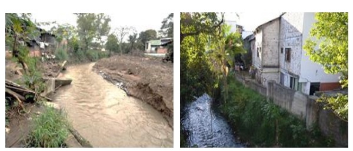

Amenazas por inundaciones
En consecuencia, a los fuertes aguaceros que se presentan en la ciudad, los problemas de erosión aumentan cada día mas haciendo que la tierra se remueva y cause represamientos en el rio y su caudal incremente, aumentando así las áreas de inundación como se evidencia en la imagen 5, es así como las áreas mas afectadas son las que presentan una pendiente mínima.
Imagen 5. zonas de inundación en el área urbana de Popayán Fuente: adaptado de Villaquirán, 2017.
Este incremento en los cauces afecta de manera negativa las viviendas, equipamientos, zonas comerciales, vías de comunicación, producción agropecuaria y en casos catastróficos conlleva a la pérdida de vidas humanas, puesto que el drenaje es lento en estas áreas inundadas y se crean depósitos de agua estancada que generan problemas sanitarios. Imagen 6.
Imagen 6. Inundación sector norte / inundación sector centro.
Fuente: adaptado de Villaquirán, 2017.
Además, a este problema se suma que en la ciudad las oportunidades de desarrollo son escasas en el área rural, aunque luego del terremoto de 1983, se presentó una evolución no controlada que acelero en gran medida el crecimiento humano, de igual manera también el conflicto armado también ha acelerado este proceso, como se ve reflejado en el sector rural de la sub cuenca en la vereda santa Bárbara, donde se han asentado 121 personas provenientes de otros municipios a causa de este conflicto, afectando las áreas de protección de la cuenca hídrica de la ciudad.
Por otro lado, teniendo en cuenta las características geográficas, topográficas urbanísticas y de cobertura vegetal que presenta el rio Molino si llegase a presentarse un fenómeno climatológico como el niño y la niña, la abundancia de agua que se produciría generaría el desbordamiento de la cuenca afectando en su gran mayoría a los barrios que se han construido en la ribera y zona de protección del río, como la que se presento en 1938, imagen 7, donde perdieron la vida dos personas y hubo numerosas pérdidas materiales (Villaquirán, 2017).

Imagen 7. Invasión zona de protección (norte) / invasión zona de protección (centro)
Lista de referencias
Anónimo. (S.F). Río Molino y antiguo puente ferroviario, Guápiles [figura]. Recuperado de Río Molino y antiguo puente ferroviario, Guápiles | Mapio.net
Corporación Autónoma Regional del Cauca. (2018). Rio Molino – Pubús Planes De Ordenación Y Manejo De Cuencas Hidrográficas. Recuperado de https://web2018.crc.gov.co/index.php/ambiental/planes-de-ordenacion-y-manejo-de-cuencas-hidrograficas/162-rio-molino-pubus
Erazo, Y. &. Reinaldo, H. (2017). Modelación de la calidad del agua del río molino en el área urbana de la ciudad de Popayán – cauca (Tesis de pregrado). Corporación universitaria autónoma del cauca, Popayán, Colombia. Recuperado de https://repositorio.uniautonoma.edu.co/bitstream/handle/123456789/24/T%20IA-M%20058%202017.pdf?sequence=1&isAllowed=y
Montenegro, A & Toro, C. (210). Caracterización de especies nativas aptas para la implementación en sistemas agroforestales para el fortalecimiento de la conectividad de la red de reservas en la cuenca rio molino, municipio de Popayán, departamento del cauca (Tesis de pregrado). Universidad del cauca, Popayán, Colombia. Recuperado de http://repositorio.unicauca.edu.co:8080/bitstream/handle/123456789/161/CARACTERIZACION%20%20DE%20ESPECIES%20NATIVAS%20
PARA%20SAF%20CUENA%20RIO%20MOLINO_2010.pdf?sequence=1&isAllowed=y
Paredes, L. (2010). El rio molino bajo el punte del humilladero [figura]. Recuperado de El rio molino bajo el punte del humilladero | luis fernando paredes | Flickr
Para la naturaleza. (2010). Ya estamos limpiando playas, costas y ríos, en el río Piedras e Isla Verde, como parte de la Limpieza de Playas, Costas y Ríos [figura]. Recuperado de Para la Naturaleza Twitterren: "[AHORA] Ya estamos limpiando playas, costas y ríos, en el río Piedras e Isla Verde, como parte de la Limpieza de Playas, Costas y Ríos. https://t.co/RcLEToN2FV" / Twitter
Periódico la campana. (2020). El Parque Malecón del Río Molino, se proyecta desde la calle 15 N hasta el parque José Hilario López [figura]. Recuperado de El Parque Malecón del Río Molino, se proyecta desde la calle 15 N hasta el parque José Hilario López - Periódico La Campana - Periódico La Campana (periodicolacampana.com)
Villaquirán, L. (2017). identificación de las condiciones naturales y antrópicas, que generan riesgo por inundación del río molino en el municipio de Popayán Colombia (Tesis de maestría). Universidad de Manizales, Manizales, Colombia. Recuperado de https://ridum.umanizales.edu.co/xmlui/bitstream/handle/20.500.12746/3051/Informe%20final%20Tesis_%20Lorena%20Villaquir%c3
%a1n%20L%c3%b3pez_DESMA.pdf?sequence=1&isAllowed=y